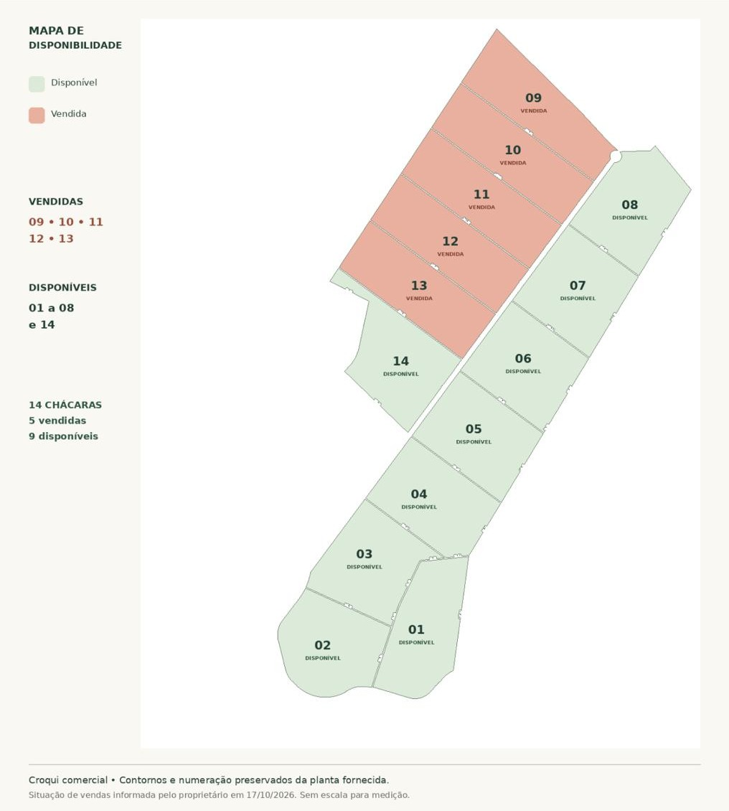

O Empreendimento
Chácaras Recanto da Lagoa
Um loteamento de 14 chácaras de 20.000 m² (2 hectares) cada, em Pingo-d'Água, Minas Gerais, às margens da Lagoa Tiririca. Um convite para desacelerar, viver perto da natureza e aproveitar a tranquilidade do interior mineiro.
14chácaras no total
20.000 m²por chácara
9disponíveis
R$ 280.000valores a partir de
Chácaras
Mapa de disponibilidade
14 chácaras — 9 disponíveis e 5 vendidas. Consulte a numeração abaixo e fale com a gente pelo WhatsApp.

Localização
Pingo-d'Água, Minas Gerais
O Recanto da Lagoa fica às margens da Lagoa Tiririca, em Pingo-d'Água/MG.